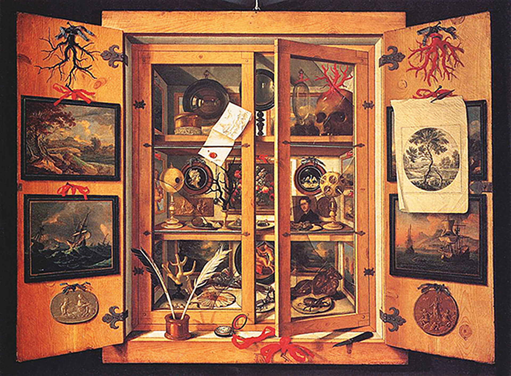

A razão e o progresso, dessa forma, foram elementos do pensamento iluminista e influenciaram as transformações políticas e sociais do fim do século XVIII e início do século XIX. Tal pensamento, em sua crítica ao Absolutismo, à
Igreja Católica e à estrutura do Antigo Regime como um todo, encaixava--se nas aspirações e desilusões da burguesia em ascensão na Europa do século XVIII. Essa classe social se inspirou no Iluminismo para construir a retórica e
as
bandeiras de suas revoltas naquele momento. Foi o caso da independência dos Estados Unidos, planejada e realizada por seguidores do Iluminismo, como Thomas Jefferson, assim como da Revolução Francesa e da Independência da
América
Latina. O resultado foi que, com essas revoltas tornando-se vitoriosas, o Iluminismo se transformou na base dos novos Estados e da mentalidade emergida desses movimentos.
SILVA, Kalina V.; SILVA, Maciel H. Dicionário de conceitos históricos. São Paulo: Contexto, 2008. p. 211.
De acordo com o texto, analise as afirmativas a seguir.
(01) A burguesia buscava nas ideias iluministas representatividade política, visto que, no campo econômico, já havia conquistado, no decorrer de três séculos, sua emancipação.
(02) O apoio incondicional à fé e à religião foi um dos pontos fundamentais do pensamento iluminista.
(04) A divisão de poderes em Executivo, Legislativo e Judiciário, característica dos Estados contemporâneos, é uma herança do Antigo Regime defendida pela burguesia.
(08) As ideias iluministas influenciaram líderes, como Benjamin Franklin, durante o processo de Independência das Treze Colônias Inglesas na América.
Sobre o Iluminismo, pode-se dizer que:
foi um movimento homogêneo, representado exclusivamente pela burguesia em ascensão com objetivos políticos.
seu maior filósofo foi Maquiavel, que defendia que o príncipe deveria usar dissimulação quando as condições assim o exigissem, parecendo a todos, entretanto, sincero e íntegro.
Rousseau, em seu Discurso sobre a origem da desigualdade, afirma que a raça humana estaria em situação melhor se, quando o primeiro cercou um pedaço de terra e disse “é meu”, alguém tivesse gritado aos companheiros que
os
frutos da terra pertencem a todos e ela mesma não pertence a ninguém.
Voltaire, deixando inúmeras obras de variados gêneros, foi o grande propagandista e agitador do período.
Assinale a alternativa correta.
a) Estão corretas as afirmativas I, II e III.
b) Estão corretas apenas as afirmativas I e III.
c) Estão corretas as afirmativas II, III e IV.
d) Estão corretas apenas as afirmativas III e IV.
Observe a imagem a seguir.

dell’Opificio delle Peitre Dure, Florença
REMPS, Domenico. Gabinete de curiosidades. 1690. 1 óleo sobre tela, color., 99 cm × 137 cm. Museo dell’Opificio delle Peitre Dure, Florença.
Essa obra de arte representa um gabinete de curiosidades do século XVII. Desenhos, pinturas, esculturas, apetrechos científicos, exemplares de botânica e zoologia, objetos de ótica e até mesmo uma arma e um crânio indicam a ampla
diversidade de interesses de um indivíduo contemporâneo da Revolução Científica.
Algumas referências podem se remeter a descobertas e inovações dos séculos XV a XVII, que contribuíram para a mudança de mentalidade ante a natureza e as percepções de mundo.
Com base nessas informações, faça o que se pede.
a) Identifique os elementos que se remetem aos estudos da natureza e do ser humano.
b) Relacione as colunas:
( 1 ) navegação marítima
( 2 ) pólvora
( 3 ) corpo humano
( 4 ) prismas e espelhos
Passou a ser objeto da ciência, que o estuda desde sua composição até o funcionamento de seus diferentes sistemas.
Sua experimentação passou ser considerada fonte de conhecimento.
Possibilitou a ampliação da noção de mundo e a conquista de novos territórios.
Trazida do Oriente, sua aplicação garantiu a supremacia bélica no Novo Mundo.
(UEPB) Relacione os pensadores, comprometidos com ideias racionalistas entre os séculos XVII e XVIII [...] com suas máximas [...].
( 1 ) René Descartes
( 2 ) John Locke
( 3 ) Voltaire
( 4 ) Denis Diderot
( 5 ) Immanuel Kant
“Todas as ideias derivam da sensação ou reflexão.”
“Posso não concordar com o que você diz, mas defenderei até a morte o direito de você dizer.”
“Nossa época é a da crítica, a que tudo deve se submeter.”
“Penso, logo existo.”
“Cada século tem um espírito que o caracteriza: o espírito do nosso parece ser o da liberdade.”
Assinale a alternativa que indica a sequência correta.